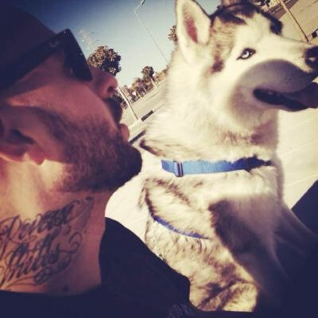

revskills
Vulnerability Research
Hello, I'm Francisco Alonso, an Independent Security Researcher. Working in Zero-day research since 2003. These are my main areas of interest (no particular order) :
- Zero-Day Exploits In The Wild
- iOS, macOS Kernel LPE & userspace
- Browsers and JavaScript Engines RCE and Sandbox Escape
- Fuzzing: Hardware-Traced, Emulation/Hypervisor snapshot, Custom instrumentation and custom Sanitizers (including Kernels). Structure aware mutators, Optimized Schedulers. Binary coverage-guided, distributed.
- Hardware & Firmware Security: Baseband, Wi-Fi, Bluetooth, USB Restricted Mode, Bootloaders
- In-memory Anti-Forensics
- Security Mitigations
- GNU/Linux Kernel
- Reverse Engineering
- Static and Dynamic Analysis
- Rust, C/C++, Python, JavaScript/TypeScript
- WebKit: CVE-2023-38611, CVE-2023-32393, CVE-2022-42826, CVE-2021-1788
- Mozilla Firefox and Thunderbird: CVE-2020-6819, CVE-2020-6820, CVE-2018-12362, CVE-2017-7757, CVE-2015-4512
- Capstone Engine: CVE-2016-3160, CVE-2016-7151, CVE-2016-4044
- Facebook HHVM (and PHP): CVE-2016-6870 , CVE-2016-6871 , CVE-2016-6872 , CVE-2016-6873 , CVE-2016-6874 , CVE-2016-6875 , CVE-2014-6228 , CVE-2014-6229
- file (libmagic): CVE-2019-8906, CVE-2014-3479, CVE-2014-3480, CVE-2014- 0237, CVE-2014-0238, CVE-2014-3710, CVE-2014-3478
- libplist: CVE-2017-5836
- CUPS: CVE-2014-3537
- GoPro: ZDI-14-347 CVE-2014-6433
- Telegram Web App (Webogram): CVE-2015-1586
- FlexPaper and Mozilla's PDF.js (WikiLeaks audit): CVE-2014-9677, CVE-2014-9678
- SyScan360, 2016 (Shanghai): Browsers Bug Hunting and Mobile Device Exploitation
- QE Camp, Masaryk University, 2014 (Brno): Security Testing & Fuzzing
- No cON Name (NcN), 2010 (Barcelona): Resolución de concurso de NcN 2k10, CTF winner. Disclosed and SpyEye c&c Zero-day vulnerability and exploit.